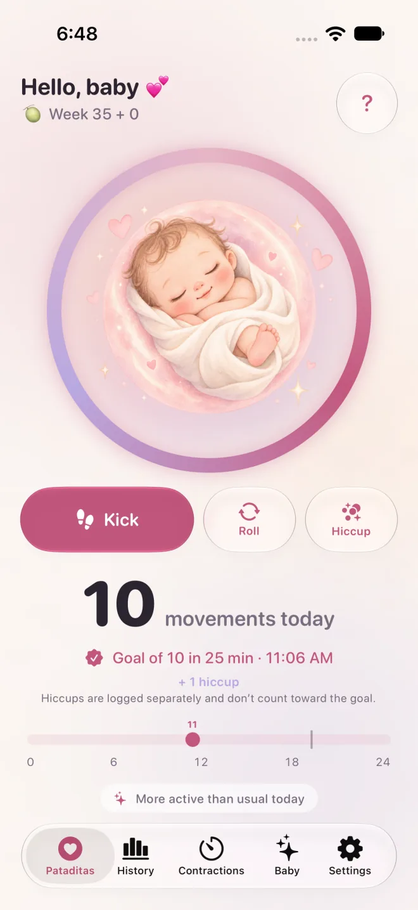

Pataditas / Counting baby kicks
Counting baby kicks: when to start, what is normal, when to call
Parents often ask how many kicks are normal, when to start counting and when to call someone. This page summarises what health bodies in the UK, the USA, Mexico and Brazil say about fetal movements, and shows where they differ.
Quick answer
- There is no single normal number of movements for every baby. What matters is your own baby’s usual pattern (NHS, RCOG).
- Counting advice differs by country: Count the Kicks (USA) suggests timing 10 movements a day from week 28, Mexico’s IMSS guideline mentions 10 movements in 2 hours, and the NHS (UK) says you do not need to count.
- Every source agrees: if movements reduce, stop or change, get checked straight away. Do not wait until tomorrow.
How many baby kicks (fetal movements) are normal?
There is no single normal number of baby kicks. The NHS says there is no set number of movements you should feel each day, and the RCOG says the same: what matters is your own baby’s usual pattern, and whether it reduces or changes.
The RCOG adds that babies have sleep periods, mostly 20 to 40 minutes and rarely longer than 90 minutes, when they usually do not move, and that afternoon and evening are often the busiest times. Movements tend to increase until about 32 weeks and then stay about the same, and you should keep feeling your baby move right up to and during labour. You may notice fewer movements when you are busy, and they can be harder to feel if your placenta is at the front of your womb.
Mexico’s IMSS clinical guideline also says there is no clear definition of a “normal” number, and mentions a minimum of 10 movements in a 2-hour period as a reference. Reaching any number does not mean your baby is well: a change from your baby’s usual pattern is the signal to call.
When do babies start kicking, and when should I start counting?
Most people first feel movements between about 16 and 24 weeks, according to the NHS; in a first pregnancy it can be after 20 weeks. Count the Kicks suggests starting daily counts at week 28, or week 26 if you are higher risk or expecting more than one baby. The NHS says counting is not required.
If you have not felt your baby move by 24 weeks, the NHS says to tell your midwife, who will check your baby’s heartbeat and movements. Mexico’s IMSS guideline says counting may be suggested from the third trimester, and from 26 to 32 weeks when a pregnancy has risk factors. Your midwife or doctor may recommend a different time or method for you, so ask at your next appointment.
How do you count baby kicks?
Count the Kicks suggests picking a time when your baby is usually active, sitting with your feet up or lying on your side, and noting each movement until you reach 10 while timing how long it takes. Do it at about the same time every day. Kicks, jabs, pokes, rolls and swishes all count; hiccups do not.
Count the Kicks says to call your provider right away if you notice a change in the strength of your baby’s movements or in how long it takes to reach 10. Pataditas does not use a stopwatch: you tap once for each movement, and the app groups your taps and notes when 10 movements are logged within two hours. That grouping is the app’s own feature, not a medical threshold or a sign that your baby is well.
Why does counting advice differ between countries?
Because health bodies weigh the evidence differently. Count the Kicks (USA) and Mexico’s IMSS guideline describe counting to 10, while the NHS and RCOG (UK) say there is no set number, you do not need to count, and there is not enough evidence to recommend a routine movement chart.
They agree on the point that matters most: if your baby moves less than usual, stops moving or the pattern changes, get checked straight away. Ask your own midwife or doctor which approach they want you to use.
| Country and source | Counting | When to get help |
|---|---|---|
| UK: NHS, RCOG | No set number of movements; you do not need to count. Get to know your baby’s usual pattern. The RCOG says there is not enough evidence to recommend a routine movement chart. | Immediately if your baby moves less than usual, stops moving or the pattern changes, even in the middle of the night. |
| USA: Count the Kicks | Time how long it takes to feel 10 movements, every day, from week 28 (week 26 if higher risk or expecting more than one baby). | Right away if the strength of movements or the time to reach 10 changes; go to the nearest hospital if you cannot reach your provider. |
| Mexico: IMSS | Its clinical guideline describes counting 10 movements in 2 hours as a short check and says counting may be suggested from the third trimester. | Go to hospital immediately, whatever the day or time, if movements decrease or stop. The guideline lists decreased or absent movement for more than 2 hours after week 28 as a warning sign. |
| Brazil: Ministry of Health | The 2026 pregnancy booklet lists reduced movement as a warning sign; it does not set a number to count to. | Seek care immediately if movements decrease or stop, especially if your baby goes more than 4 hours without moving after 20 weeks. |
Do hiccups count as kicks?
No. Count the Kicks does not count hiccups, because it describes them as involuntary. In Pataditas you can log hiccups as their own type, so they stay in your history but do not count toward the 10 movements. If you are unsure whether you felt a hiccup or a movement, ask your midwife or doctor.
Count the Kicks lists kicks, jabs, pokes, rolls and swishes as the movements to count. The RCOG says people feel their baby’s movements as a kick, flutter, swish or roll.
What should I do if my baby moves less than usual?
Contact your midwife, doctor or maternity unit straight away, day or night. The NHS says not to wait until the next day, even in the middle of the night, and not to use a home heartbeat listening kit to check on your baby. Do not rely on an app or a counting goal to decide whether to call.
The RCOG says never to go to sleep ignoring a reduction or change, and to call again if it happens again, no matter how many times. Count the Kicks says to go to the nearest hospital if you cannot reach your provider. In Mexico, the IMSS says to go to hospital immediately, whatever the day or time; Brazil’s Ministry of Health says to seek care immediately and, if needed, call SAMU on 192. Read what happens when you go in to be checked.
How does Pataditas fit in, and does it work on Apple Watch?
Pataditas is an iPhone and Apple Watch app that records the movements you feel: you tap once for each kick, roll or hiccup and it saves the time and type. It does not diagnose anything, cannot tell whether your baby is well and does not replace advice from your midwife or doctor.
On Apple Watch, the companion app (watchOS 26 or later) lets you tap your watch each time you feel a movement; add Pataditas to your watch face or Smart Stack for quick access. Entries sync with the iPhone app through your private iCloud, with no account to create. Counting is free.

Want the step-by-step? Read How to count baby kicks with an iPhone or Apple Watch.
Related guides
- Baby moving less than usual? What to do now, and what happens at the check
- How to time contractions, and when to call your midwife or go to hospital
- How to count baby kicks with an iPhone or Apple Watch
Author, sources and review status
Written by Luis Angel Lucatero Villanueva, founder of Kaelux, which publishes Pataditas. This page is general information, not medical advice. It has not been reviewed by a clinician: every medical statement on it comes from the sources below, which were last checked on November 10, 2026. We update the page when those sources change. Spotted an error? Write to hola@rutmia.com.
- NHS (UK): Your baby’s movements — page last reviewed 8 July 2024; checked November 10, 2026.
- RCOG (UK): Your baby’s movements in pregnancy (patient information) — published February 2019; the RCOG says it reviews this information every three years, so a newer version may exist; checked November 10, 2026.
- Count the Kicks (USA): Frequently asked questions — the page shows no date; checked November 10, 2026.
- IMSS (Mexico): ¿Cuándo debo acudir urgentemente al hospital? (in Spanish) — the page shows no date; checked November 10, 2026.
- IMSS (Mexico): Clinical practice guideline IMSS-028-08, Control prenatal con atención centrada en la paciente (in Spanish, for clinicians) — 2017 update; checked November 10, 2026.
- Ministry of Health (Brazil): Caderneta Brasileira da Gestante (in Portuguese) — 2026 edition; checked November 10, 2026.
The NHS, RCOG and Count the Kicks sources are in English; IMSS is in Spanish and the Brazilian booklet is in Portuguese.